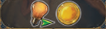

Timespan
Overview
We're leading our civilizations through history, from the stone age to the space age!
The game is played over 3 ages, or rounds. At the end of the third age whoever has the most victory points wins the game.
Gameplay overview
Each age is played over several phases
- Income (simultaneous)
- Discovery (turn order)
- Action (simultaneous)
The first round of the game will not have an income phase, so we'll jump right into discovery
Discovery phase
This is where we'll draft cards and bonuses
We'll deal out offers equal to playercount +1. An offer is a discovery tile + one face up and one face down card. There are tiles and cards that correspond to each age
-
Turn order here is normally dictated by our positions on the peace track.
- Higher peace means you pick earlier.
- Ties are broken by number on top left of player board. Lower wins ties.
- In the first round, we'll just go by the number on our player boards
-
In turn order we'll grab an offer.
- When you grab your offer:
- Take the two cards into your hand
- Gain the bonus on the discovery tile
- Some age 3 discovery tiles have a clock icon that idicates that they can be used at a later time
- Return the discovery tile to the bottom of its stack
- The unclaimed offer has its components put on the bottom of their stacks/decks
Action phase
In this pahse we'll move our camels and then activate our workers.
Even though this phase is simultaneous, we'll all do camel movement before anyone starts doing worker stuff
Camels
Camels move to wonders to get you bonuses. You can move your camel to:
- Either of the 2 neutral wonders or marketplace on main board
- Costs a coin to visit a wonder (shows on board)
- Free to visit market, then choose what you gain
- 1 coin and 1 fur
- 1 point and one pottery luxury tile
- 1 silk luxury tile
- A wonder constructed by another player
- Gives that player 2 VP (shown at top of card)
- Never to your own wonder
- A camel must always move to a new location
- Multiple camels can visit the same wonder
If you visited a wonder, gain its effect.
Worker activiation
Lets talk about your boards real quick. Everyone has an identical storage board to the right, and everyone has a unique civilization board.
We're going to talk about luxury goods in this section a lot, they're just tiles depicting a thing like a gemstone or a pottery and showing a bonus on the bottom.
First off there is no distinction between the happy and sad side of your workers, so you do you.
- Start this phase by retreiving your workers from where they are already
- Could be played on cards, actions boxes, or the sleeping area (bottom left of your smaller player board)
- During worker activation, you can play as many cards as you want and activate action boxes by placing workers as much as you want in any order you want
Playing a card
- Playing a card requires you to pay the resources shown in the top left of the card
- Card can either be a wonder (camel up top), or a history card
- Wonders go above your board. You can activate your wonder with workers, and other players can visit it with their camel
- You start with one in hand, but can get more.
- They will stay in play until the end of the game
- History cards are played to your board in the leftmost space
- All other cards on your board are pushed one space to the right
- A card in the rightmost space gets pushed into your "graveyard" on your storage board face down
- Stuff falls off of the card. Workers go to the resting area, luxury tiles are flipped over and put in the top section of your storage board.
- Flipped luxury tiles will provide income later
- Cards in your graveyard give you no benefits except end game points
- Wonders go above your board. You can activate your wonder with workers, and other players can visit it with their camel
A little more on history cards:
- The top right of the card shows the end game points in the purple bubble
- Next to that is the discard effect. At any time you may discard this card from your hand to gain its effect
- The right side of the card can also have dove, this is a peace symbol (more on that later)
- An upturned hand showing income that you'll get in the income phase while this card is in on your board (more on that later)
- The bottom portion of a history card is the action box, where you can send a worker to get an effect
- Above the action box there can be different triggers:
- "when played" means you get the bonus only when a card is initially played to your board
- "when complete" means you get the bonus when all required luxury goods have been placed on the card
- "when moved" means you get the reward every time a card is moved on your board, including when it is moved off board and into the graveyard
- A little black tombstone icon means you only gain the reward when this card is moved to your graveyard
- Some cards let you tuck a card, or play a card under one already on your board. These cards must share the same tag (banner next to card name). Cards with purple banners can't be tucked. Slide the tucked card under the top one so that only its action box is visible. Placing a single worker on the top card activates both action boxes, but you can't place a worker on the tucked card's action box separately. All covered symbols, income, card tags, and stuff like "when moved" effects are all ignored on the tucked card. Whenever the top card would be pushed along your board, the tucked card moves with it. You can never have a stack of cards on your board of more than 2 (so once you tuck, you can't tuck there again).
- On the top left of the action box, there could be a luxury good symbol
- Luxury goods earned through other actions and put in your supply
- If you have a card that wants a luxury good that you have, you can put it on the card to get a bonus when you activate it
Activate an action box
Action boxes are the spaces where you can place workers. These are on cards played on your board, your wonders cards played above your board, and on your civilization board.
- Activate an action box by placing on of your unused workers on it and gaining the rewards shown
- An action box can only hold one worker
- If you activate the action box of a card with a luxury tile on it, you also gain the reaward shown on the luxury tile
- All effects are optional, and you can resolve effects in any order that you want
Lets talk about some of the actions on the player board:
Gaining & upgrading resources
Some actions relate to resources, which are tracked on your storage board (not the civ board, but the other big one). The bottom area holds your cubes, then you'll move those cubes around to represent different resources.
A couple action spaces are to just gain coins.
- When you gain a resource, take a cube and place it on the indicated resource.
- To spend a resource, move a cube from it back down to the bottom area.
Another action on your board lets you upgrade resources
- This allows you to move a single cube on your board one space directly up.
- So bottom area could upgarde to coin, coin to upgrade to any of the three above, then you're locked in track like wheat to sheep. Then any of the sheep tier can upgarde to gold.
- At any time during the game you can perform the following conversions:
- Two coins to gain a basic resource (wheat, stone, wood)
- Spend an upgraded resource to get a number of upgrades depending on what was used
- Reminders for these are shown on the right of the resource area tiers
- You can nver have more than 8 resource cubes on your board.
- If you gain a resource that you can't store, you must first spend another resource cube to return to the bottom area (or just ignore gaining the new resource)
- You could cash something in to get upgrades and return it to the bottom area for instance
- Or you can just return any cube to the bottom area
Luxury tiles
A quick aside about luxury tiles. Not related to an action space, but they relate to everything we've talked about so far
Whenever you gain a luxury tile, place it at the top of your playerboard.
- At any time, you may use of of these tiles in 2 ways
- Discard it to immediately gain one resource upgrade action
- Put the tile onto a card on your board that requires that specific good
- You may only place one good tile per card (unless the card requires more)
- Placing a good tile on a card means every time you use a worker on that card, you will gain the benefit from the action box and from the goods tile
- Once a goods tile is on a card, it can't be discarded
- When a card with a luxury good tile falls off your board, flip the tile over and put it in the top section of your storage board. It will generate income in later rounds
- The book luxury goods bonus is to activate the action box below that card, so the action space on your board. You do this even if you had already placed a worker in that box to activate it previously
- Each flipped over book also provides you peace symbols for the rest of the game
Card draw
This action space on your board lets you choose what type of card to draw
- Name a tag
- Person, construction, or invention
- Draw cards from the current age deck until you hit one with that tag
- Add that card to hand, returning all others to the bottom of the deck
- What can you expect from each tag? Great question the rulebook doesn't go into that at all
Moving up on tracks
Several action spaces on your board let you move up on different tracks

On the main board the science track is the blue one that starts at the bottom with the lightbulb symbol
- When you advance your marker along this track you may hit a white or black gear
- This lets you grab a gear tile to place on your technology board (the smallest playerboard with all the gears)
- Cover up a gear of a matching color. You now unlock this bonus
- A lot of bonuses are one time effects. A symbol shown next to the gear is an additional thing you gain
- Some bonuses get you an upgraded action tile. Cover up the indicated tile on your playerboard with it. Now you have the improved action for the rest of the game
On the main board, the culture track is the yellow one that runs opposite the science track.
- Some spaces here can get you additional workers that go into your ready area. If gained during the action phase, they are immediately ready to use
There are a few different tracks at the top of the board.
When you see the symbol, you go up on the corresponding track. We start with an action space to move up on the ship track.
- When you move up on a track, gain any bonuses moved through or stopped on. You must always move to the right.
- Some branching paths require you to choose one bonus or another
- Some spaces require you to choose one of several options
- Reaching the end of the track means you can't move further. Any further track progress just rewards you with the points in the green bubble.
- The first person to reach the end of a track gets the points in blue. Anyone else that reaches the end in the same phase of the game will get the points as well. In later phases people reaching here won't get the blue points.
- The culture and science tracks share their blue bonus points
End of the round
Once we've finished the action phase, we'll advance the time marker.
So the time track shows, discovery phase, action phase, income, discovery, action for the first age. Second age is a similar length, third age only has a single set of phases.
Before we start the second age, we'll upgrade the action tiles on our board to switch from the ship track to the ballon track icon.
Before we start the third age, we'll upgrade that action tile to the spaceship.
The action round is move a camel to a wonder, then play all the cards you can and take actions with all the workers you can.
Income
Before the second round starts, we'll get income
- All players adjust their position on the peace track (the dove)
- Count all visible peace symbols in your play area
- Put your marker on the space matching your count
- Score points equal to where you are (so if you had 4 peace, move your marker to 4 and gain 4 points)
- This track resets to your new count during the income phase.
- So if you were at 4, and then lost a symbol, in the next peace check you would move your maker to 3
- All players simulaneously gain all visible income effects in their play area:
- Printed on civ board
- Cards in play on board
- Luxury tiles in graveyard
- Activated technologies
- If you play any new cards in the income phase (from some income bonuses), if they have peace on them they are not added to your total
Peace track placement dictates turn order for new discovery phase. Highest peace goes first, then 2nd highest and so on. Tied players refer to the number on their player board with lowest numbers going first.
Game end
After the final action phase, the game ends and we do scoring.
- Update the peace track and score it
- Gain all income. Any income that would move you up on a track instead gets you one point
- 2 points per gold bar in storage
- 3 points per luxury tile that shows VP (the purple ore on)
- VP on all played cards. Including:
- Cards on board
- Cards in graveyard
- Played wonders
- We've got end game goal cards in between each pair of players. Check to see if you get the points on these